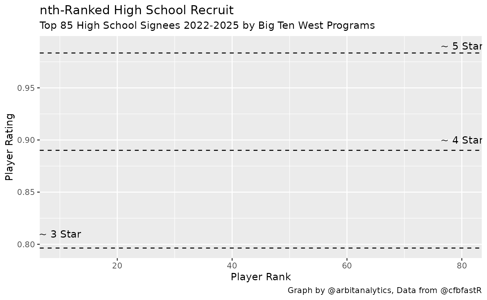

Visualizing Team Talent from Player Recruiting Rankings
Eric Hess - Arbitrary Analytics


nth-rated-recruit.RmdHi cfbfastR users, I’m Eric Hess and I run the Twitter account and blog called Arbitrary Analytics. My work focuses on sports analytics mainly for Nebraska and the Big Ten. Today, I’m going to walk through how I used the cfbfastR package to make a simple plot of recent recruiting classes. The final output will give you a quick way to visually approximate how much talent each school has recruited. I’m going to assume you have a basic understanding of working with R and that your development environment is already setup.
We start by loading the packages we need. The cfbfastR package will provide us with our source of data. The dplyr package gives us handy data manipulation tools and the ever useful pipe (%>%) syntax. Finally, ggplot2 will allow us to make a simple, functional graph of our results.
if (!requireNamespace('pacman', quietly = TRUE)){
install.packages('pacman')
}
pacman::p_load(dplyr, ggplot2)
pacman::p_load_current_gh("saiemgilani/cfbfastR")To create the plot I’m going to use two functions from cfbfastR. The first is the cfbd_team_info function. I’m going to pass "B1G" to the function for the conference argument to get info for just Big Ten teams. The next function I’m going to use is the cfbd_recruiting_player function. The apply function allows me to run the given function for each item in the data frame I pass to it. In this case I run it for each team in the Big Ten. I’m calling this function four times to get each year’s class. I’ll combine all of these into one large data frame with every team’s recruits. For the sake of simplicity, I am only using High School recruits as shown by the recruit_type argument. You can also get Prep School recruits (recruit_type = "PrepSchool") or junior college recruits (recruit_type = "JUCO").
teams <- cfbfastR::cfbd_team_info(conference = "B1G")
schools <- teams$school
yr <- cfbfastR:::most_recent_season()
year_range <- (yr-3):yr
team_year_df <- expand.grid(year=year_range, school = schools)
tictoc::tic()
future::plan("multisession")
all.recruits <- furrr::future_map2_dfr(
.x = team_year_df$year,
.y = team_year_df$school,
function(.x,.y){
cfbfastR::cfbd_recruiting_player(
year = as.character(.x),
team = as.character(.y),
recruit_type = "HighSchool"
)
}
)
tictoc::toc()## 14.534 sec elapsed
dplyr::glimpse(all.recruits)## Rows: 1,226
## Columns: 19
## $ id <chr> "43123", "43250", "43359", "43777", "43840", "…
## $ athlete_id <chr> "4360401", "4360402", NA, "4360371", "4360389"…
## $ recruit_type <chr> "HighSchool", "HighSchool", "HighSchool", "Hig…
## $ year <int> 2018, 2018, 2018, 2018, 2018, 2018, 2018, 2018…
## $ ranking <int> 216, 343, 452, 870, 933, 971, 973, 1042, 1153,…
## $ name <chr> "Calvin Avery", "Verdis Brown", "Reuben Unije"…
## $ school <chr> "Bishop Dunne", "IMG Academy", "IMG Academy", …
## $ committed_to <chr> "Illinois", "Illinois", "Illinois", "Illinois"…
## $ position <chr> "DT", "OC", "OT", "DUAL", "OLB", "OT", "DUAL",…
## $ height <dbl> 74, 75, 77, 75, 72, 77, 76, 77, 79, 68, 77, 71…
## $ weight <int> 310, 294, 303, 195, 200, 295, 213, 330, 245, 1…
## $ stars <int> 4, 4, 3, 3, 3, 3, 3, 3, 3, 3, 3, 3, 3, 3, 3, 3…
## $ rating <dbl> 0.9174, 0.8944, 0.8824, 0.8580, 0.8551, 0.8539…
## $ city <chr> "Dallas", "Chicago", "Bradenton", "Peoria", "S…
## $ state_province <chr> "TX", "IL", "FL", "IL", "FL", "IL", "TX", "TX"…
## $ country <chr> "USA", "USA", "USA", "USA", "USA", "USA", "USA…
## $ hometown_info_latitude <chr> "32.7762719", "41.8755616", "27.4989278", "40.…
## $ hometown_info_longitude <chr> "-96.7968559", "-87.6244212", "-82.5748194", "…
## $ hometown_info_fips_code <chr> "48113", "17031", "12081", "17143", "12103", "…The next step is cleaning the data. The cfbd_recruiting_player() function gives us 14 pieces of data for each player. Our graph is going to focus on just the rating and what school they committed to. I’m going to keep the player name as well as a check field so I can go back and check my data set more quickly if I have any errors. The next line uses dplyr syntax to give me just the highest rated 85 recruits in order by their rating. I use this info to assign a ranking for each school’s 1-nth recruit. Finally, I use the teams data frame again so each recruits school information can be used on our graph.
recruits.limited <- all.recruits %>%
dplyr::select(name, rating, committed_to)
recruits.sorted <- recruits.limited %>%
dplyr::group_by(committed_to) %>%
dplyr::top_n(85, rating) %>%
dplyr::arrange(committed_to, -rating,.by_group=TRUE) %>%
dplyr::mutate(num = dplyr::row_number()) %>%
dplyr::ungroup()
recruits.final <- recruits.sorted %>%
dplyr::left_join(teams, by = c("committed_to"="school"))If you follow the Big Ten you know a lot of schools have a shade of red as their primary color. This can make some plots hard to read. Because of this I’m filtering down my data to look at just recruits who committed to a Big Ten West division school. For ggplot2 to use a manually defined color set, I must get a vector of colors that I want, each team’s primary color, and assign each value a name corresponding to the school I’m interested in.
big.ten.west <- recruits.final %>% filter(division == "West")
big.ten.west.teams <- teams %>% filter(division == "West")
big.ten.west.colors <- big.ten.west.teams$color
names(big.ten.west.colors) <- big.ten.west.teams$schoolNow that we have our data collected and cleaned we finally get to the fun part - plotting. We plot each player’s rating based on the ranking of commit they are to a school. We also tell ggplot to use the manual color values we defined earlier. I added some extra horizontal lines to approximate the ratings of 3, 4, and 5 star recruits.
ggplot(big.ten.west, aes(x=num, y=rating, color = committed_to)) +
geom_line(size = 1.2) +
scale_color_manual(values = big.ten.west.colors) +
geom_hline(yintercept = c(.9834, .8901, .7964), linetype = "dashed") +
annotate("text", label = "~ 5 Star", y = .99, x = 80) +
annotate("text", label = "~ 4 Star", y = .90, x = 80) +
annotate("text", label = "~ 3 Star", y = .81, x = 10) +
labs(y = "Player Rating",
x = "Player Rank",
title = "nth-Ranked High School Recruit",
subtitle = glue::glue("Top 85 High School Signees {yr-3}-{yr} by Big Ten West Programs"),
caption = "Graph by @arbitanalytics, Data from @cfbfastR")
From this graph we can see how well teams have recruited the last four years. A large gap between two of the lines shows that one team has recruited much more talent at that relative position of recruiting. In the Big Ten West graph above, we can see that Nebraska and Wisconsin recruit similar top level recruits. Both schools top 5 recruits are 0.95 rated or higher. However, Nebraska’s classes are much stronger from the 10th recruit on. While this graphic oversimplifies the team building process (excluding transfers, walk-ons, etc.), it gives the reader a good feel for the talent level at a program in a quick glance.